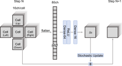

Neural Cellular Automata and Recurrent Architectures
Conway’s Game of Life
Here’s Wikipedia’s description of Conway’s Game of Life:
The universe of the Game of Life is an infinite, two-dimensional orthogonal grid of square cells, each of which is in one of two possible states, live or dead (or populated and unpopulated, respectively). Every cell interacts with its eight neighbours (its Moore neighborhood), which are the cells that are horizontally, vertically, or diagonally adjacent. At each step in time, the following transitions occur:
- Any live cell with fewer than two live neighbours dies, as if by underpopulation.
- Any live cell with two or three live neighbours lives on to the next generation.
- Any live cell with more than three live neighbours dies, as if by overpopulation.
- Any dead cell with exactly three live neighbours becomes a live cell, as if by reproduction.
You can “play” it below. The living cells are green and dead cells are black. You can pause and click/drag to change individual cells.
Cells have local receptive fields only being impacted by their neighbours. By applying the same set of rules to itself recursively, cells can have a global impact on any other cell.
Cellular Automata as Convolutional Neural Networks
We can cast Conway’s Game of Life as a single convolutional layer followed by a non-linear function. This has been studied before [1].
Convolutional layers in neural networks slide a local filter over an input, multiply element-wise, and then sum.. Convolutional neural networks (CNNs) stack convolutional layers and simple non-linear functions so they can learn complex non-linear functions.
Suppose we have a cell and its surrounding cells with the following configuration. 1 means alive and 0 means dead.
| 1 | 1 | 0 |
| 0 | 1 | 1 |
| 0 | 0 | 0 |
Now let’s apply this filter to that 3x3 section:
\[ \begin{pmatrix} 1 & 1 & 1 \\ 1 & 10 & 1 \\ 1 & 1 & 1 \end{pmatrix} \]
First we do the element wise multiplication:
\[ \begin{pmatrix} 1 & 1 & 0 \\ 0 & 1 & 1 \\ 0 & 0 & 0 \end{pmatrix} \odot \begin{pmatrix} 1 & 1 & 1 \\ 1 & 10 & 1 \\ 1 & 1 & 1 \end{pmatrix} = \begin{pmatrix} 1 \times 1 & 1 \times 1 & 0 \times 1 \\ 0 \times 1 & 1 \times 10 & 1 \times 1 \\ 0 \times 1 & 0 \times 1 & 0 \times 1 \end{pmatrix} = \begin{pmatrix} 1 & 1 & 0 \\ 0 & 10 & 1 \\ 0 & 0 & 0 \end{pmatrix} \]
Then we take the sum of all the elements. This counts the number of living neighbours and adds 10 if the cell is living itself. In this case we calculate 13.
According to Conway’s rules, the value of this cell is a non-linear function based on this sum.
What we want is:
\[f(S) = \begin{cases} 1 & \text{if } S = 3 \quad \text{(Dead cell with 3 neighbors $\rightarrow$ alive)} \\ 1 & \text{if } S = 12 \quad \text{(Alive cell with 2 neighbors $\rightarrow$ alive)} \\ 1 & \text{if } S = 13 \quad \text{(Alive cell with 3 neighbors $\rightarrow$ alive)} \\ 0 & \text{otherwise} \quad \text{(All other cases $\rightarrow$ dead)} \end{cases}\]
So this cell would update to 1 and remain living.
Conway’s Game of Life does this same operation for all cells, and then repeats.
Neural Cellular Automata
Neural Cellular Automata learn neural network weights to solve problems. Effectively, they are changing the rules in Conway’s Game of Life in such a way that they actually compute some goal rather than just resulting in an interesting simulation.
There are cool examples of NCA performing MNIST digit classification and solving mazes. Here’s a video of NCA playing Pong.
NCA adds multiple channels to the 2D images which can be thought of also as each cell containing a vector. This is shown in Figure 1. The stochastic update updates a cell with 50% probability and can be thought of as a form of dropout.

Katsuhiro Endo / Kenji Yasuoka also provide a good verbal description of the architecture. I’ve placed some emphasis on what elements of the methodology make it similar to many of the other neural network methodologies which solve problems iteratively via recurrence.
The model used in this article is a simplified version of the model used in Growing Neural Cellular Automata. Each cell consists of 16 real channels. The first of the 16 channels is used to input the state of the maze. The wall is +1, the road is 0, and the endpoint is -1. The second channel is used to output the solution of the maze. The road on the shortest path is +1 and the other roads are -1, as a target value. The other 14 channels are used as hidden variables.
Beyond Neural Cellular Automata With Recurrent Architectures
There are many neural network architectures that share some key features of Neural Cellular Automata.
- Injecting the initial input/problem to solve at all steps.
- Keeping track of a current model prediction which is iteratively improved.
- Applying the same neural network repeatedly i.e. recurrence.
Most of these architectures feature global receptive fields rather than local receptive fields. In practice this means replacing CNNs with Transformers, MLP-Mixer [2] or gMLP [3].
These related architectures include Tiny Recursive Models [4], Think Again Networks [5], Deep Thinking Networks [6], Adaptive Computation Time RNNs [7] and Recurrent Relational Networks [8].
This is a growing and interesting direction for neural networks and intelligent systems.